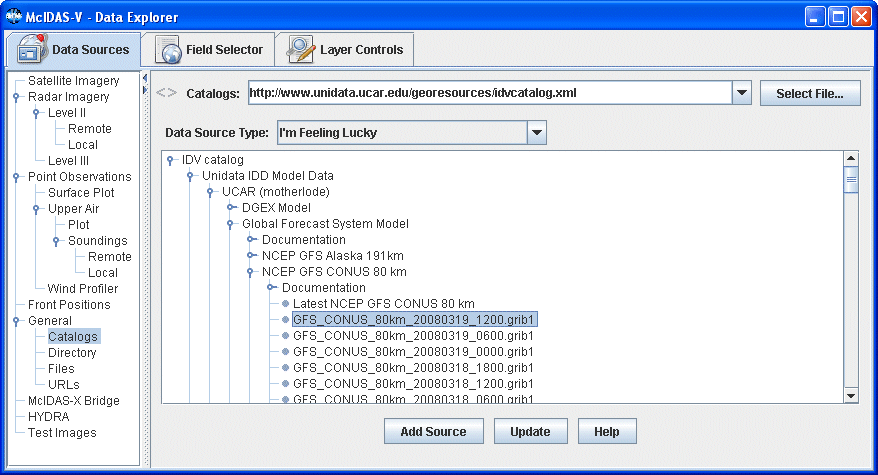
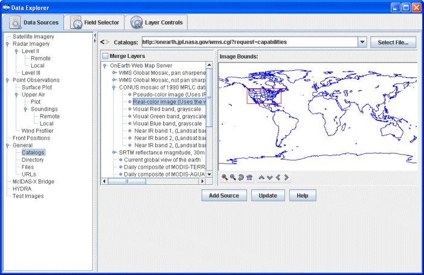

Choosing Cataloged Data
The General->Catalogs chooser shows THREDDS catalogs of data holdings on remote data servers (typically TDS or OPeNDAP) and provides access to remote Web Map Server (WMS) image servers. McIDAS-V provides a link to an initial default catalog, idvcatalog.xml, which should appear in the Catalog menu. If not, the user can directly enter the URL of the catalog: https://www.ssec.wisc.edu/mcidas/software/v/catalog.xml.
This URL links to a catalog of real time model data, a collection of county level shapefiles for roads and hydrography features, and a collection of useful Web Map Servers. For more information on using this chooser to display grid data, see Getting Started - Displaying Gridded Data.

Image 1: Catalog Chooser
Properties
- Catalog - Selects the catalog for the data. Enter in a catalog URL (and hit Enter or click
 Refresh ) or select a catalog URL from the pull down menu. Use the
Refresh ) or select a catalog URL from the pull down menu. Use the  button to select a catalog on the local disk.
button to select a catalog on the local disk.
- History - Switches back and forth between selected catalogs with the
 and
and  buttons.
buttons.
- Data Type - Selects the type of data. If left as "I'm Feeling Lucky", McIDAS-V will figure out what kind of data is in the file by the URL itself. This can be overridden by selecting the type of data the file contains from the pull down menu. See the data formats and sources available.
- Tree Structure - Lists all of the data. Open the tree structure by clicking on the (
 ) tab icon. Clicking on a data source will enable the
) tab icon. Clicking on a data source will enable the  button.
button.
- Show Thumbnail Images - Shows thumbnails in the THREDDS catalog if available.
 Help - Brings up this help page.
Help - Brings up this help page.- Refresh - Updates the catalog chooser with the most recent data.
- - Loads the selected data.
The following image displays the WMS chooser:

Image 2: WMS Chooser
The tree view on the left shows the different image layers available. The user can select one image or use Ctrl+click to select multiple images. The map on the right plots a red box around the bounding area of the particular item selected.
Data files that are imported through the WMS Servers must contain gridded data. Also, the NetCDF-Java Common Data Model must be able to identify the coordinate system used.
Properties
- Merge Layers - Selects multiple data sources to be loaded and displayed at the same time. When unchecked, multiple data sources will be loaded, but not displayed.
- Image Bounds - Provides an overview of the bounding box area of a selected image. Use the following buttons to navigate around the map:
 Zoom In - Zooms in over the current map area.
Zoom In - Zooms in over the current map area. Zoom Out - Zooms out over the current map area.
Zoom Out - Zooms out over the current map area. Home Map Area - Returns to the default map area.
Home Map Area - Returns to the default map area. Move View Up - Moves the view up (map down).
Move View Up - Moves the view up (map down). Move View Down - Moves the view down (map up).
Move View Down - Moves the view down (map up). Move View Left - Moves the view left (map right).
Move View Left - Moves the view left (map right). Move View Right - Moves the view right (map left).
Move View Right - Moves the view right (map left).